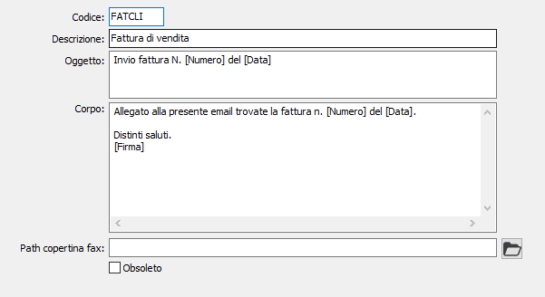

Testi invio
La tabella consente di creare, individuandole in base ad un codice alfanumerico, testi da inserire nelle eMail o nei fax al momento dell'invio dei documenti e associare, nel caso di fax, il percorso relativo al file di copertina.

CODICE: codice alfanumerico per identificare il testo di invio. Sul campo sono attive le funzioni di ricerca (F9) sulla tabella stessa.
DESCRIZIONE: indicare la descrizione del testo che sarà visualizzata all'interno dello zoom di ricerca della tabella.
OGGETTO: campo testo utilizzato per indicare l'oggetto della e-mail/fax che sarà creato in automatico. Sul campo sono attivi dei tag (nomi tra parentesi quadra) da poter inserire nel corpo del testo che in fase di invio saranno sostituiti con i valori effettivi; alcuni tag standard sono:
[Anno] = Anno documento
[Serie] = Serie documento
[Numero] = Numero documento
[Data] = Data documento
[Causale] = Causale documento
[DsSerie] = Lettera serie
[CodiceAnag] = Codice anagrafico cliente/fornitore
[RagioneSociale] = Ragione sociale
[Nominativo] = Nominativo destinatario
[Firma] = Nome mittente
Attenzione: per l'estratto conto ed i solleciti clienti gli unici campi utili campi utilizzabili sono quelli a partire dal campo CodiceAnag.
CORPO: campo testo utilizzato per indicare il corpo del messaggio e-mail/fax che sarà creato in automatico. Sul campo sono attivi dei tag (nomi tra parentesi quadra) da poter inserire nel corpo del testo che in fase di invio saranno sostituiti con i valori effettivi; alcuni tag standard sono:
[Anno] = Anno documento
[Serie] = Serie documento
[Numero] = Numero documento
[Data] = Data documento
[Causale] = Causale documento
[DsSerie] = Lettera serie
[CodiceAnag] = Codice anagrafico cliente/fornitore
[RagioneSociale] = Ragione sociale
[Nominativo] = Nominativo destinatario
[Firma] = Nome mittente
Attenzione: per l'estratto conto ed i solleciti clienti gli unici campi utili campi utilizzabili sono quelli a partire dal campo CodiceAnag.
PATH COPERTINA FAX: Indica il percorso completo del file da utilizzare come copertina del fax durante l'invio.
OBSOLETO: flag attivabile dall’utente per inibire il possibile utilizzo dell’elemento di tabella in esame nelle successive transazioni.